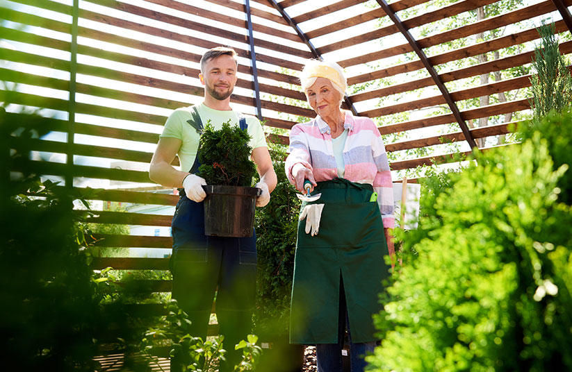
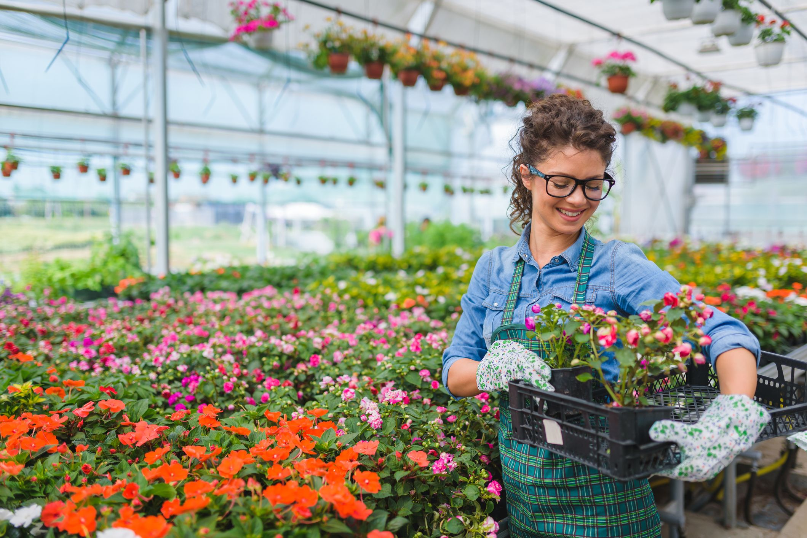
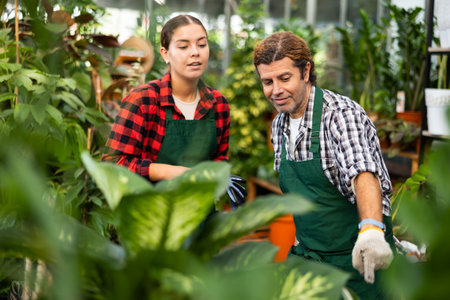

¿Quienes Somos?
Somos un grupo de expertos en el cuidado y manejo de todo tipo de especies vegetales.
En nuestras sucursales encontrará una amplia variedad de plantas, desde florales y árboles hasta arbustos y plantas de interior.
Nuestros expertos están a su disposición para brindarle el mejor asesoramiento en cuanto a las necesidades de cada planta y sus cuidados


